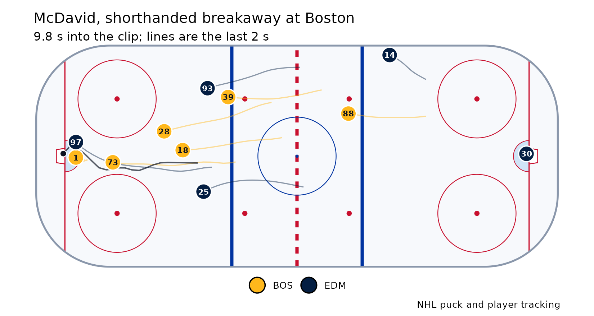
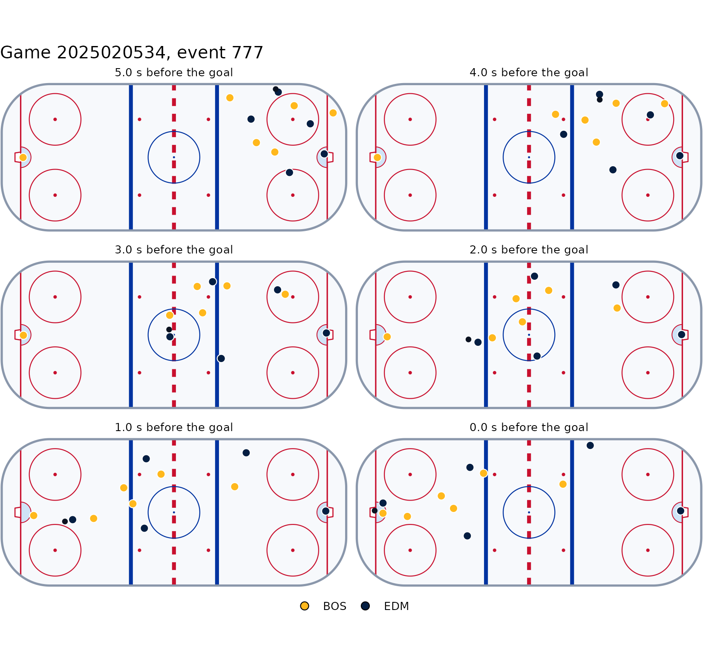

Since 2023-24 the NHL has kept the puck and player tracking behind
every goal: about fourteen seconds of every skater, both goalies and the
puck, ten frames a second. NHL.com uses it for its goal replays. This
vignette reads one goal end to end, Connor McDavid’s shorthanded
breakaway at Boston on 18 December 2025, from the copy that ships with
the package, so nothing here needs the network.
nhl_goal_tracking(2025020534, 777) fetches the same
frames.
library(bluelineR)
path <- system.file("extdata", "goal-2025020534-777.json.gz", package = "bluelineR")
frames <- read_goal_tracking(path, game_id = 2025020534, event_id = 777)
frames
#> # A tibble: 1,683 × 9
#> frame time entity_id is_puck player_id sweater_number team x y
#> <int> <dbl> <dbl> <lgl> <dbl> <dbl> <chr> <dbl> <dbl>
#> 1 1 0 1 TRUE NA NA NA 77.9 -30.7
#> 2 1 0 6001 FALSE 8480280 1 BOS -87.3 -0.403
#> 3 1 0 6018 FALSE 8478401 18 BOS 81.0 -4.75
#> 4 1 0 6028 FALSE 8477496 28 BOS 54.4 -0.288
#> 5 1 0 6039 FALSE 8479987 39 BOS 57.7 15.4
#> 6 1 0 6073 FALSE 8479325 73 BOS 44.9 -25.2
#> # ℹ 1,677 more rowsEach row is one object in one frame. x runs along the
rink and y across it, in feet from centre ice, the frame
the play-by-play uses: the nets are at x = -89 and +89. The puck is
entity_id 1.
When it went in
The clip runs on past the goal, and the puck can sit at the other net
when it starts or blip over the line before the real goal.
goal_frame() wants it in the net, between the posts, two
frames running, at the net the clip finishes at:
g <- goal_frame(frames)
g
#> [1] 99
frames[frames$frame == g & frames$is_puck, c("time", "x", "y")]
#> # A tibble: 1 × 3
#> time x y
#> <dbl> <dbl> <dbl>
#> 1 9.8 -89.6 0.989How it was scored
goal <- classify_goal(frames, team = "EDM", shot_type = "backhand")
t(goal[, c("shooter", "distance", "shot_speed", "since_neutral", "passes", "rush", "breakaway",
"oddman", "onetimer", "cross", "traffic", "behind", "forecheck")])
#> [,1]
#> shooter 8478402.0
#> distance 7.5
#> shot_speed 24.1
#> since_neutral 2.8
#> passes 2.0
#> rush 1.0
#> breakaway 1.0
#> oddman 0.0
#> onetimer 0.0
#> cross 0.0
#> traffic 0.0
#> behind 0.0
#> forecheck 0.0It was a rush (the puck was in Edmonton’s end 2.8 seconds before the shot) and a breakaway: McDavid carried it over the blue line with no Bruin but the goalie between him and the net. He shot from 7.5 feet; the puck left his stick at 24 mph, a backhand.
The rules in ?classify_goal are the ones BluelineMetrics
builds its goal types with. On 120 goals from 2025-26 the R version
agrees with the site’s on every type, the shooter, the distance, the
shot speed and the number of passes.
How fast he was going
skater_speed() gives every skater’s speed at every
frame, over the 0.6 seconds around it:
speed <- skater_speed(frames)
mcd <- speed[speed$player_id == 8478402, ]
round(max(mcd$speed_mph, na.rm = TRUE), 1)
#> [1] 20.3Drawing it
plot_goal(frames, title = "McDavid, shorthanded breakaway at Boston")
plot_goal_sequence(frames, n = 6, seconds = 5)
nhl_rink() is the empty rink, in the same feet, for
drawing anything else on.